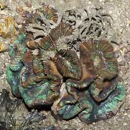
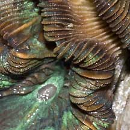
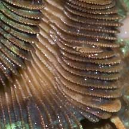
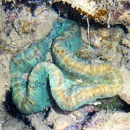
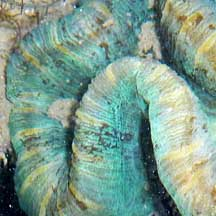
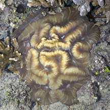
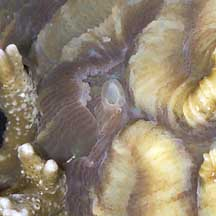

|
|
| hard corals text index | photo index |
| Phylum Cnidaria > Class Anthozoa > Subclass Zoantharia/Hexacorallia > Order Scleractinia > Family Merulinidae |
| Cabbage
coral Trachyphyllia geoffroyi Family Merulinidae updated Nov 2019 Where seen? This beautiful hard coral is rarely seen on our shores, and usually seen alone. The Cabbage coral is said to be found with other free-living corals like mushroom corals (Family Fungidae) in muddy bottoms of protected lagoons, in seagrass beds, and sandy bottoms near the base of reefs. It used to be in the Family Trachyphylliidae. Features: The skeleton has a meandering folded form (flabello-meandroid) such that the entire coral resembles a cabbage (15-20cm). Walls are tall, thin forming deep, wide valleys. The walls have fine teeth. While young ones may be attached to a hard surface, older ones are free-living. The base may be cone-shaped to help it burrow into the ground. It is sometimes also called the Banana coral by divers because, when submerged, the tissues inflate many times the size of the skeleton, forming smooth curved shapes that is said to resemble bananas. The polyp tentacles are short and usually only expanded at night. It has many mouths, located in the valleys. It is sometimes flourescent. Colours seen include brown, green and blue. Status and threats: The Cabbage coral is listed as globally Near Threatened by the IUCN. Like other creatures of the intertidal zone, they are affected by human activities such as reclamation and pollution. Trampling by careless visitors, and over-collection also have an impact on local populations. |
|
 Beting Bronok, Jul 05 |
 Many mouths located in the valleys. |
 |
| Cabbage corals on Singapore shores |
On wildsingapore
flickr
|
| Other sightings on Singapore shores |
 Beting Bemban Besar, Apr 10  Photo shared by Loh Kok Sheng on his flickr. |
 Raffles Lighthouse, Jun 07  |
|
Links
References
|